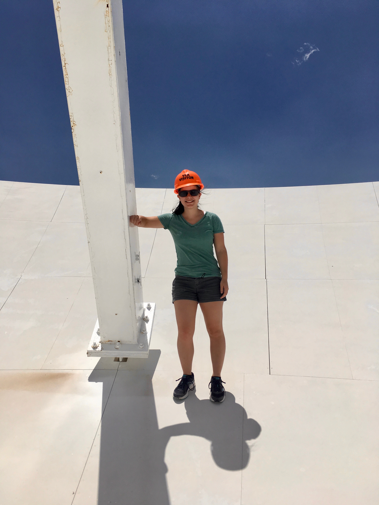

About Me
Even the smallest person can change the course of the future.

Hello!
How I got here: The combination of realizing I didn't want to be a zoologer, reading Ender's Game by Orson Scott Card, and venturing into the world of Doctor Who turned my attention to space and astronomy.
When I then realized NASA has a height restriction between 62-75 inches tall*, I had to give up on my dream of being an astronaut (at least for the time being...) However, I still had a passion for space. I was fortunate enough to take an astronomy class in high school which propelled me into studying astronomy in college.
I did my undergraduate studies at Haverford College majoring in Astrophysics and wrote my undergraduate thesis on the magnetic field of the Smith Cloud (the cover photo on my home page!).
Where am I now: I am currently doing a PhD in Astrophysics at the University of Massachusetts in Amherst, MA. I am currently studying the accretion properties of young low mass brown dwarfs and planetary companions along with looking for icy dust grains in circumstellar disks around young stars. The location of this ice gives clues to the size of dust grains and whether the disks could have the right environments for giant gas planets to form.
I have also studied how the environment surrounding natal cores in molecular clouds affect the evolution of the cores and the eventual birth of stars along with the environments of mid redshift galaxies to determine how quenching or starbursting affects their evolution into present day galaxies.
When not studying space environments, I can usually be found out in the earth environment — I greatly enjoy hiking, watching sunsets and waterfalls, and if possible, taking selfies with cacti.
Where I'm going: The future is bright with many avenues forward.
* https://www.nasa.gov/centers/johnson/pdf/606877main_FS-2011-11-057-JSC-astro_trng.pdf - page 2 paragraph 3